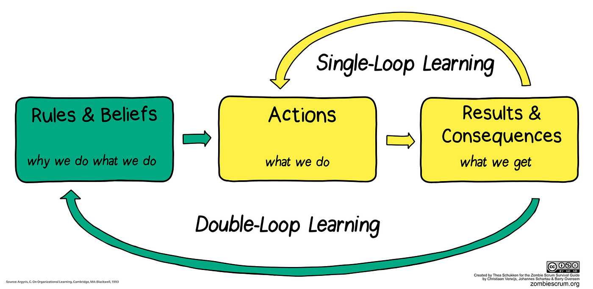

Werkboek Bedrijfskundig Onderzoek

Voorwoord
Dit werkboek biedt ondersteuning bij bedrijfskundig onderzoek. Op deze pagina lichten we toe waarom onderzoek essentieel is voor de jou als bedrijfskundige professional en onze onderzoeksaanpak bij HAN BK.
Op de volgende pagina introduceren we diverse bedrijfskundige modellen waarmee een casusorganisatie geanalyseerd kan worden. We willen jou laten zien dat er voor elk onderwerp en vraagstuk relevante modellen beschikbaar zijn.
Bij de samenstelling van dit werkboek hebben we diverse media en activiteiten geïntegreerd, waaronder tekst, video, visuals, aanvullende wetenschappelijke bronnen en opdrachten. Dit werkboek is nog in ontwikkeling; gedurende het traject voegen we nog extra content toe.
-- Witek ten Hove / witektenhove@gmail.com
Eindniveaus HAN BK
Als student Bedrijfskunde krijg je te maken met een breed scala aan onderwerpen. Je leert over de nieuwste trends en praktijken in bedrijfsmanagement, marketing, financiën, human resources en meer. We richten ons niet alleen op theoretische kennis, maar ook op het ontwikkelen van praktische vaardigheden die essentieel zijn in de hedendaagse zakenwereld.
Ons programma is opgebouwd rond een reeks kerncompetenties die aansluiten bij de eisen van de moderne bedrijfswereld. Deze competenties omvatten:
Probleemanalyse en Diagnostiek: Je leert problemen te identificeren en analyseren in verschillende zakelijke contexten.
Ontwerpvaardigheden: We moedigen je aan om creatieve en innovatieve oplossingen te ontwerpen.
Veranderingsmanagement: Je ontwikkelt vaardigheden om veranderingen effectief te beheren en te leiden.
Evaluatievermogen: Je leert processen en resultaten kritisch te evalueren.
Onderzoeksvaardigheden: Onderzoek speelt een cruciale rol in het maken van onderbouwde zakelijke beslissingen.
Sociaal-communicatieve Vaardigheden: Deze zijn essentieel voor succesvol teamwork en netwerken.
Samenwerking en Netwerkvorming: Je leert de kunst van samenwerken en het opbouwen van professionele relaties.
Professionalisering: Wij stimuleren je om een levenslange leerhouding te ontwikkelen.
Waardengedreven Handelen: Ethiek en integriteit staan centraal in onze aanpak.
De opleiding is opgedeeld in drie niveaus van toenemende complexiteit en verantwoordelijkheid. Je start met het leggen van een solide basis (niveau 1), bouwt voort op gevorderde vaardigheden (niveau 2) en streeft uiteindelijk naar expertise (niveau 3). Elk niveau brengt je dichter bij het worden van een volwaardige bedrijfskundige professional.
Uiteindelijk leer je bedrijfskundig redeneren en handelen. Dit beschouwen we als een overkoepelende competentie waar meerdere onderliggende competentie samenkomen.
Overkoepelende competentie Bedrijfskunde HAN
| Bedrijfskundig redeneren | ||
|---|---|---|
| De startende professional is in staat tot onderbouwde argumenten te komen voor een integraal advies op basis van data, theorie, de bedrijfskundige professionele vakmanschap en persoonlijke inbreng, zodat besluitvorming hierop plaats kan vinden. De student heeft zicht op de bedrijfskundige aspecten in relatie tot elkaar conform het bedrijfskundig model (niveaus/breedte: disciplines). | ||
| Niveau 1 | Niveau 2 | Niveau 3 |
| De student herkent de relevante aspecten van een bedrijfskundig vraagstuk en kan op basis van betrouwbare argumenten een eenvoudig bedrijfskundig advies uitbrengen. | De student onderbouwt een bedrijfskundig advies door bedrijfskundige kennis en vaardigheid toe te passen in het continu proces van gegevensverzameling en analyse, gericht op de vragen en problemen van een organisatie en diens stakeholders. | De student kijkt meervoudig naar de problemen en oplossingen rondom een bedrijfskundig vraagstuk en ontwerpt een integrale oplossing die aantoonbaar leidt tot de realisatie van de bedrijfskundige doelstellingen. |

Emma Jansen - Niveau 1
Startende Bedrijfskundige
Project: Efficiëntieanalyse bij Klein Kledingbedrijf.
"Dit project hielp me inzien hoe cruciaal het is om elk aspect van een bedrijf te begrijpen, hoe klein ook!"
Lucas de Vries - Niveau 2
Gevorderde Bedrijfskundige
Project: Marktanalyse voor Tech Startup.
"De uitdaging om nieuwe markten te identificeren was zowel boeiend als leerzaam, en toonde het belang van data-analyse aan."

Sophia Rodriguez - Niveau 3
Expert Bedrijfskundige
Project: Strategisch Plan voor Duurzame Energie.
"Werken aan dit project heeft me niet alleen bedrijfskundige vaardigheden bijgebracht, maar ook hoe je een echte impact kunt maken op de wereld."
Waarom is onderzoek belangrijk voor BK?
Onderzoeksvaardigheden zijn cruciaal voor studenten Bedrijfskunde, omdat deze vaardigheden hen in staat stellen om gefundeerde beslissingen te nemen in complexe zakelijke omgevingen. Daniel Kahneman, Nobelprijswinnaar in de economie, introduceerde het concept van System 1 en System 2 Thinking. System 1 verwijst naar onze intuïtieve, snelle denkwijze die vaak gebaseerd is op aannames en vooroordelen. System 2 daarentegen is langzamer, beredeneerd en analytisch.

In de zakelijke wereld kunnen intuïtieve reacties (System 1) leiden tot overhaaste en ondoordachte beslissingen, met potentieel negatieve gevolgen. Onderzoeksvaardigheden stellen studenten Bedrijfskunde in staat om System 2-denken te bevorderen, waarbij ze zakelijke vraagstukken analyseren, data verzamelen en evalueren, en weloverwogen besluiten nemen.
Dit onderscheid in denkprocessen onderstreept het belang van een grondige analyse in het bedrijfsleven. Zonder degelijke onderzoeksvaardigheden riskeren studenten te vertrouwen op ongefundeerde aannames of oppervlakkige inzichten, wat kan leiden tot suboptimale bedrijfsstrategieën. Door de integratie van onderzoek in hun toolkit zijn studenten Bedrijfskunde beter uitgerust om leiderschap te tonen en waarde toe te voegen in een competitieve markt.
Er was ’s nachts een aanrijding met vluchtmisdrijf waarbij een taxi betrokken was. In de stad zijn er twee taxibedrijven, Groen en Blauw. Je krijgt de volgende gegevens:
- 85% van de taxi’s in de stad is Groen en 15% is Blauw.
- Een getuige beweerde dat de taxi Blauw was. De rechtbank heeft de betrouwbaarheid van de getuige onder de omstandigheden van die nacht getest, en geconcludeerd dat de getuige in 80% van de gevallen elke kleur correct identificeerde en in 20% van de gevallen een fout maakte.
Wat is de kans dat de taxi die bij het ongeluk betrokken was Blauw was in plaats van Groen?
Linda is 31 jaar oud, single, heeft een uitgesproken mening en is erg slim. Ze studeerde filosofie. Als student was ze actief betrokken bij verschillende protestbewegingen die streden voor meer sociale rechtvaardigheid.
Welk van de volgende uitspraken is waarschijnlijker?
Linda is een bankmedewerker.
Linda is een bankmedewerker en actief in de feministische beweging.
Hoe doen we onderzoek bij BK?

Onderzoek is een systematisch proces waarbij kennis wordt vergaard en uitgedragen. Hier is een beknopte uitleg van het onderzoeksproces aan de hand van de genoemde stappen:
Discovery: Deze initiële fase draait om het identificeren van een onderzoeksvraag of probleem. Hierin wordt voorafgaand onderzoek beoordeeld, een literatuurstudie gedaan en wordt de behoefte aan nieuw onderzoek vastgesteld.
Analysis: Nadat de gegevens zijn verzameld, worden ze in deze fase geanalyseerd. Dit kan kwalitatief of kwantitatief zijn, afhankelijk van de onderzoeksmethode. Hier worden patronen, relaties of verschillen in de data geïdentificeerd.
Writing: In deze fase worden alle uitkomsten van alle voorgaande fases samengevoegd tot een kennis- of discussiestuk (bijvoorbeeld een adviesrapport of een proof of concept).
Publishing: Alle informatie omtrent het verloop van het onderzoek en de resultaten dienen te worden vastgelegd in een vorm die aansluit bij de wensen van de stakeholders. Deze wensen zijn in de vorige stap geïnventariseerd en afspraken hierover zijn samengevat in een aantal kwaliteitscriteria voor communicatie. De keuze voor de plek en vorm van publicatie hangt af van deze criteria.
Outreach: Als de kwaliteit voldoende is en de stakeholders het toelaten, dient de kennis die is gegenereerd te worden gedeeld met het publiek van de HAN. Aangezien de HAN een maatschappelijke organisatie is, dient in principe iedereen die geïnteresseerd is vrij toegang te hebben.
Assessment: Om de PDCA-cirkel te sluiten, beoordeelt de kritische onderzoeker het hele traject dat hij heeft doorlopen en kijkt of hij zijn eigen leerdoelen heeft behaald. Daarbij kijkt hij ook vooruit en formuleert een aantal leerpunten. Inspiratie hiervoor haalt hij uit de feedback van de gebruikers van zijn materiaal.
Door deze stappen te volgen, wordt een systematische benadering van onderzoek gewaarborgd, waarbij elk aspect zorgvuldig wordt aangepakt voor maximale impact en waarde.
Wat ga jij doen?
A-cluster - Literatuuronderzoek
Een literatuuronderzoek verschaft inzicht in de bestaande kennis, vraagstellingen, perspectieven, analysemethoden, inzichten en presentatiemethoden.

Hier is hoe literatuuronderzoek kan bijdragen aan elke fase van het bedrijfskundig praktijkonderzoek:
Discovery: In deze fase is literatuuronderzoek cruciaal om te begrijpen wat al bekend is over het onderwerp en hoe er naar een vraagstuk kan worden gekeken. Door de huidige literatuur te onderzoeken, kan de student een kritische blik werpen op de gaten of inconsistenties in de huidige kennis bij de opdrachtgever.
Analysis: Literatuur kan methoden voor gegevensanalyse aanbevelen die eerder succesvol zijn gebleken. Bovendien kan het vergelijken van eigen bevindingen met eerder gepubliceerde resultaten helpen bij het identificeren van patronen of afwijkingen.
Writing: Tijdens het schrijven van een verslag of paper ondersteunt literatuur de argumenten en resultaten van de student. Hierin kunnen bestaande theorieën, modellen of resultaten worden aangehaald om de eigen bevindingen te onderbouwen of in context te plaatsen.
Publishing: Het kennen van de bestaande literatuur helpt bij het identificeren van de doelgroepen.
Outreach: Door middel van literatuuronderzoek kan de student inzicht krijgen in de beste manieren om hun bevindingen te communiceren, afhankelijk van hun publiek. De literatuur kan strategieën en best practices bevatten voor effectieve kennisdeling.
Assessment: Reflecteren op het eigen onderzoek in de context van bestaande literatuur kan helpen bij het identificeren van sterke punten, verbeterpunten en toekomstige onderzoeksmogelijkheden. Feedback van gebruikers kan ook worden vergeleken met bevindingen uit de literatuur om het eigen leerproces te verrijken.
Discovery: Probleemanalyse
Als eerstejaars student HBO Bedrijfskunde krijg je vraagstukken aangereikt die variëren in complexiteit. Het is van belang dat deze vraagstukken voldoende uitdaging bieden om je analytische en kritische vaardigheden te ontwikkelen. Om te bepalen of een vraagstuk voldoet aan de verwachte HBO-standaard, zijn er frameworks en hulpmiddelen beschikbaar. Deze kunnen je helpen bij het evalueren van de diepgang en relevantie van een vraagstuk. Indien een probleem niet direct voldoet aan de gestelde standaard, bieden deze hulpmiddelen ook aanknopingspunten om het vraagstuk verder te ontwikkelen tot een niveau dat passend is voor HBO Bedrijfskundig Onderzoek.
Wicked Problems
Een term die vaak in de wereld van beleid, ontwerp en bedrijfsstrategie naar voren komt, is ‘Wicked Problems’: complexe, onderling afhankelijke en moeilijk te definiëren vraagstukken die geen eenvoudige of definitieve oplossing hebben. In tegenstelling tot ‘tamme’ problemen, die met de juiste expertise en middelen kunnen worden opgelost, zijn Wicked Problems inherent ambigu en resistent tegen standaardoplossingen.

Kenmerken van Wicked Problems:
- Geen eenduidige formulering:
- Wicked Problems hebben geen definitieve formulering; het definiëren van het probleem kan al een uitdaging op zich zijn.
- Voorbeeld: Denk aan het bepalen van een ‘gezond dieet’. Wat gezond is, kan variëren per persoon, cultuur en nieuw wetenschappelijk onderzoek.
- Geen stopregel:
- Het is onduidelijk wanneer een Wicked Problem als “opgelost” kan worden beschouwd.
- Voorbeeld: Stel je werkt aan een groepsproject. Wanneer is het echt ‘af’? Er zijn altijd wel dingen die je kunt verbeteren of anders kunt doen.
- Oplossingen zijn niet absoluut:
- Er zijn geen eenduidig juiste of onjuiste oplossingen voor Wicked Problems, slechts oplossingen die goed of minder goed zijn.
- Voorbeeld: Bij het kiezen van een specialisatie tijdens je studie is er geen juiste of verkeerde keuze, alleen keuzes die beter of minder goed bij je passen.
- Geen directe of ultieme toetsing:
- Er is geen directe en geen definitieve test waarmee kan worden bepaald of een oplossing voor een Wicked Problem juist is.
- Voorbeeld: Het organiseren van een evenement voor studenten. Je weet pas écht of het geslaagd is wanneer het evenement heeft plaatsgevonden.
- Elke oplossing is eenmalig:
- Oplossingen voor Wicked Problems zijn “one-shot” operaties. Vanwege het gebrek aan leermogelijkheden door trial-and-error is elke poging van groot belang.
- Voorbeeld: Het organiseren van een introductieweek. Wat dit jaar werkt, werkt misschien volgend jaar niet vanwege veranderende omstandigheden en studentenverwachtingen.
- Niet uitputtend beschrijfbare oplossingsset:
- Voor Wicked Problems is er geen uitputtend beschrijfbare set van potentiële oplossingen, noch is er een duidelijk omschreven set van toegestane acties die in de plannen kunnen worden opgenomen.
- Voorbeeld: Denk aan het omgaan met stress tijdens de tentamenperiode. Er zijn talloze methoden en niet allemaal zullen ze in studieboeken of workshops staan.
- Uniek in aard:
- Elk Wicked Problem is in essentie uniek, wat betekent dat ervaringen met het ene Wicked Problem niet noodzakelijk toepasbaar zijn op een ander.
- Voorbeeld: Problemen binnen je studiegroep; hoewel je vrienden soortgelijke problemen kunnen hebben, is jouw specifieke situatie en groepsdynamiek uniek.
- Symptoom van een ander probleem:
- Elk Wicked Problem kan worden gezien als een symptoom van een ander, onderliggend probleem.
- Voorbeeld: Als je moeite hebt om je te concentreren tijdens de les, kan het een symptoom zijn van een groter probleem, zoals slaapgebrek of persoonlijke zorgen.
- Meerdere verklaringen mogelijk:
- De discrepantie die een Wicked Problem vertegenwoordigt, kan op talloze manieren worden uitgelegd, wat leidt tot meerdere perspectieven en benaderingen.
- Voorbeeld: Wanneer de opkomst voor een gastcollege laag is, kan dit komen door het tijdstip, de inhoud, het gebrek aan communicatie of omdat het concurrentie had van een ander evenement.
- De planner mag geen fouten maken:
- Gezien de aard en de impact van beslissingen met betrekking tot Wicked Problems, is er geen ruimte voor fouten. Het is essentieel dat planners accuraat, doordacht en verantwoordelijk zijn in hun aanpak.
- Voorbeeld: Als je verantwoordelijk bent voor het boeken van een locatie voor een groot studie-evenement, kun je het je niet veroorloven om een fout te maken in de datum of tijd, omdat dit grote gevolgen heeft voor alle betrokkenen.
Deze kenmerken benadrukken de noodzaak van een diepgaande, reflectieve en kritische benadering bij het aanpakken van Wicked Problems, in lijn met het concept van System 2-denken van Kahneman (zie Waarom is onderzoek belangrijk voor BK?).
Single- en Double-loop Learning
Een andere manier om naar een vraagstuk te kijken is door je af te vragen hoeveel leervermogen het van de organisatie gaat vergen om het probleem op te lossen. Leervermogen kan worden begrepen door concepten als single- en double-loop learning.

Single-loop learning is een vorm van leren waarbij men de gevolgen van acties in een bepaalde situatie probeert te verbeteren zonder de onderliggende aannames te veranderen. Het is een cyclisch proces waarbij fouten worden gecorrigeerd zonder de onderliggende oorzaken te onderzoeken.
Double-loop learning gaat een stap verder en betreft het herzien en veranderen van de onderliggende aannames en waarden. Het gaat niet alleen om het corrigeren van fouten, maar ook om het heroverwegen van de basisprincipes en het aanpassen van de acties dienovereenkomstig.
Koppeling van Single- en Double-loop Learning aan Wicked Problems
Single-loop learning kan worden toegepast op ‘tamme’ problemen, waarbij de oplossing duidelijk is en de onderliggende aannames niet in twijfel worden getrokken. Bij het aanpakken van Wicked Problems met alleen single-loop learning, kunnen oplossingen oppervlakkig zijn en het werkelijke probleem niet aanpakken.
Double-loop learning is essentieel bij het aanpakken van Wicked Problems. Gezien de complexiteit en ambiguïteit van dergelijke problemen, is het noodzakelijk om de onderliggende aannames en waarden te heroverwegen. Double-loop learning biedt een diepgaande, reflectieve en kritische benadering die nodig is om de ware aard van Wicked Problems te begrijpen en effectieve oplossingen te ontwikkelen.
Concluderend, bij het aanpakken van Wicked Problems is het essentieel om een double-loop learning-benadering te hanteren om de complexiteit en onderliggende oorzaken van het probleem echt te begrijpen en effectieve oplossingen te ontwikkelen.
Literatuuronderzoek als hulpmiddel bij Wicked Problems
Het aanpakken van Wicked Problems vereist een grondig begrip van het betreffende vraagstuk, en dit is waar literatuuronderzoek een cruciale rol speelt. Literatuuronderzoek biedt een fundament van kennis, verkregen uit eerder uitgevoerd onderzoek, en dient als een springplank voor het ontwikkelen van nieuwe inzichten en benaderingen.
Begrip van de context: Wicked Problems zijn diep geworteld in hun specifieke context. Door het bestuderen van literatuur kan men inzicht krijgen in de historische, culturele, sociale en economische factoren die bijdragen aan het vraagstuk.
Diversiteit aan perspectieven: Gezien Wicked Problems geen eenduidige oplossing hebben, is het nuttig om diverse perspectieven en benaderingen te overwegen. Literatuur kan inspiratie geven hoe je naar een probleem kunt kijken en hoe je het kunt aanpakken.
Vermijden van eerder gemaakte fouten: Door te leren van eerder uitgevoerde studies en projecten, kunnen planners en besluitvormers mogelijke valkuilen en onbedoelde gevolgen vermijden.
Identificatie van hulpmiddelen en methoden: Literatuur kan verschillende tools, frameworks en methoden aanreiken die eerder zijn gebruikt om soortgelijke of gerelateerde problemen aan te pakken.
Netwerken en samenwerking: Door het bestuderen van literatuur kan men experts, organisaties en stakeholders identificeren die waardevol kunnen zijn voor samenwerking of verdere consultatie.
Kortom, terwijl Wicked Problems uniek en complex zijn, biedt literatuuronderzoek een schat aan informatie die kan helpen bij het ontleden, begrijpen en methodisch aanpakken van deze vraagstukken. In combinatie met het diepgaande, reflectieve en kritische denken dat nodig is voor dergelijke problemen, vormt literatuuronderzoek een essentieel instrument voor effectieve besluitvorming en strategieontwikkeling.
Soms krijg je wel een heel specifieke opdracht. Het volgende maakte een collega mee aan het begin van haar loopbaan. Wat zou jij hebben gedaan?

Bij een bank loopt een groot project waar veel voor moet gebeuren en er is een Board Meeting gaande. Je bent een junior consultant en mag alleen als een ‘vlieg aan de muur’ meeluisteren. Aan het einde van de meeting wordt, terwijl iedereen al op staat, door de opdrachtgever de volgende opmerking richting jou gemaakt,
“Oh, ik vergeet het bijna, kan je even twee kasten bestellen voor op de gang?”
Waarom moeten er kasten worden gekocht?
Omdat de kasten op de afdeling Sales volzitten.
Waarom zitten de kasten vol?
Omdat Sales daarin de offertes achterlaat voor de back-office ter ondertekening. Sommige offertes worden ongetekend teruggelegd door de back-office.
Waarom worden sommige offertes niet ondertekend?
Omdat er informatie ontbreekt.
Waarom vult Sales de ontbrekende informatie niet aan?
Omdat ze het te druk hebben.
Waarom hebben ze het te druk?
Omdat ze omzet willen draaien en continue nieuwe leads aan het zoeken zijn.
Uiteindelijk bleek dus dat Sales druk bezig was extern omzet te zoeken, terwijl er -letterlijk - intern stapels aan omzet klaar lagen om gerealiseerd te worden.
Discovery: Formulering van onderzoeksvragen.
Wat is een hoofdvraag?
Als je een goed beeld hebt van het probleem dat je gaat onderzoeken, kun je onderzoeksvragen gaan formuleren. Je begint met een hoofdvraag. Dit is de centrale vraag van je onderzoek. Het geeft de richting aan van wat je wilt weten of onderzoeken. Bijvoorbeeld: “Hoe kan bedrijf X zijn omzet in het volgende jaar met 10% verhogen?”
Deelvragen
Om de hoofdvraag te beantwoorden, splits je deze op in meerdere deelvragen. Deze deelvragen helpen je om het onderzoek stap voor stap aan te pakken en uiteindelijk tot een antwoord op de hoofdvraag te komen.
Soorten deelvragen:
Theoretische deelvragen
Deze vragen richten zich op de theorie achter het onderwerp. Ze helpen je om de bestaande kennis over het onderwerp te begrijpen. Bijvoorbeeld:
- “Wat zijn de meest effectieve strategieën voor omzetgroei volgens de literatuur?”
- “Welke factoren beïnvloeden de omzet van een bedrijf volgens academische bronnen?”
Empirische deelvragen
Deze vragen zijn gebaseerd op waarnemingen, experimenten of ervaringen. Ze helpen je om gegevens te verzamelen uit de echte wereld. Bijvoorbeeld:
- “Hoe heeft de omzet van bedrijf X zich de afgelopen vijf jaar ontwikkeld?”
- “Wat zijn de ervaringen van klanten met de producten of diensten van bedrijf X?”
Analytische deelvragen
Deze vragen helpen je om de verzamelde gegevens te analyseren en te interpreteren. Ze zijn gericht op het trekken van conclusies op basis van de theoretische en empirische bevindingen. Bijvoorbeeld:
- “Welke van de geïdentificeerde strategieën zou het meest effectief zijn voor bedrijf X op basis van hun huidige situatie?”
- “Hoe verhouden de ervaringen van klanten zich tot de omzetontwikkeling van bedrijf X?”
- “Aan welke factoren kan bedrijf X werken om de omzet te verhogen?”
Door de hoofdvraag op te splitsen in theoretische, empirische en analytische deelvragen, krijg je een gestructureerde aanpak voor je onderzoek. Eerst verdiep je je in de theorie, vervolgens verzamel je gegevens uit de praktijk, en ten slotte analyseer je deze gegevens om tot een antwoord op de hoofdvraag te komen.
Discovery: Beoordeling kwaliteit informatiebronnen
Het is belangrijk om informatie te beoordelen, omdat je wilt dat je de juiste informatie gebruikt om beslissingen te nemen. In de bedrijfswereld is dit van groot belang, omdat je op de hoogte moet zijn van de laatste ontwikkelingen om te kunnen concurreren met andere bedrijven.
AAOCC of CRAAP criteria voor bedrijfskunde studenten
AAOCC en CRAAP zijn twee verschillende frameworks voor het beoordelen van informatie. AAOCC staat voor Authority, Accuracy, Objectivity, Currency en Coverage, en CRAAP is de afkorting van Currency, Relevance, Authority, Accuracy en Purpose. Ze zijn makkelijk naar elkaar te vertalen.
| AAOCC | CRAAP |
|---|---|
| Authority | Authority |
| Accuracy | Accuracy |
| Objectivity | Purpose |
| Currency | Currency |
| Coverage | Relevance |
Hoe werkt het?
Elk framework werkt door elke bron te beoordelen aan de hand van een aantal vragen.
AAOCC
Authority: Is de bron betrouwbaar? Wie heeft de informatie geschreven? Wat is de achtergrond van de auteur?
Accuracy: Is de informatie feitelijk juist? Is er bewijs om de informatie te ondersteunen?
Objectivity: Is de informatie onpartijdig? Is er sprake van vooringenomenheid?
Currency: Is de informatie up-to-date? Is de informatie recent gepubliceerd?
Coverage: Is alle relevante informatie aanwezig? Is er sprake van onvolledige informatie?
Een voorbeeld van hoe AAOCC kan worden toegepast, is het beoordelen van een artikel over social media marketing. Stel je loopt stage bij een accountancy-bureau en doet onderzoek naar dit onderwerp. Om te bepalen in welke mate het artikel geschikt is voor jouw onderzoek, kun je per criterium een score bepalen:
| Criterium | Score | Toelichting |
|---|---|---|
| Authority | Hoog | Het artikel is gepubliceerd in "Industrial Marketing Management", een gerenommeerd tijdschrift. Bovendien zijn de auteurs afkomstig van bekende universiteiten zoals Coventry University, University of Bath, Falmouth University, University of Edinburgh en Cardiff Business School. |
| Accuracy | Hoog | Het artikel maakt gebruik van bestaande literatuur en verwijst naar eerdere studies om hun argumenten te onderbouwen. Er wordt ook een methodologie beschreven voor hun onderzoek. |
| Objectivity | Hoog | Het artikel lijkt een evenwichtige benadering te hanteren bij het bespreken van social media marketing in verschillende bedrijfsmodellen. Er wordt geen duidelijke vooringenomenheid waargenomen in de presentatie van de informatie. |
| Currency | Hoog | Het artikel is gepubliceerd in 2019, wat betekent dat het relatief recent is en de informatie actueel is in de context van social media marketing. |
| Coverage | Gemiddeld tot Hoog | Het artikel behandelt een specifiek onderwerp - de vergelijking van social media marketing tussen verschillende bedrijfsmodellen. Het biedt een diepgaande analyse van het onderwerp, maar de volledige diepte van de dekking kan pas worden beoordeeld na het lezen van het volledige artikel. |
CRAAP kun je op dezelfde wijze toepassen. Hieronder vind je een hulpmiddel.
Open het Formulier (volgende tabblad)
Vul je gegevens in:
- Voornaam: Alhoewel er in dit geval geen gegevens worden bewaard, is het algemeen wijzer zo weinig mogelijk persoonsgegevens te delen. Gebruik daarom hier alleen je voornaam.
- Titel van de informatiebron: Noteer de titel van het artikel of de bron die je evalueert.
- Auteur(s): Vermeld de naam of namen van de auteurs van de bron.
- Type bron: Specificeer wat voor soort bron het is (bijv. boek, artikel, website).
- Datum van de Bron: Geef de publicatiedatum van de bron aan.
- Locatie van de bron: Beschrijf waar je de bron hebt gevonden (bijv. URL voor websites).
Evalueer de bron:
Voor elk van de criteria, selecteer een score uit de dropdown menu’s op basis van hoe goed je denkt dat de bron voldoet aan het betreffende criterium.Sla de beoordeling op:
Klik op de “Opslaan” knop. Je beoordeling wordt opgeslagen en de som van alles scores wordt berekend.Voeg een nieuwe beoordeling toe:
Als je nog een bron wilt beoordelen, klik dan op “Reset” en vul alle velden opnieuw in.Download je beoordelingen:
Zodra je klaar bent met het beoordelen van alle bronnen, klik je op de “Download CSV” knop. Een CSV-bestand met al je beoordelingen wordt gedownload naar je computer. Je kunt dit bestand openen met programma’s zoals Microsoft Excel of Google Sheets om je beoordelingen te bekijken.
Tips:
- Neem de tijd om elke bron zorgvuldig te beoordelen. De CRAAP-test is een waardevol instrument om de kwaliteit en betrouwbaarheid van een bron te bepalen.
- Als je twijfelt over een bepaald criterium, bespreek dit dan met je medestudenten of vraag je docent om advies.
Veel succes met je beoordelingen!